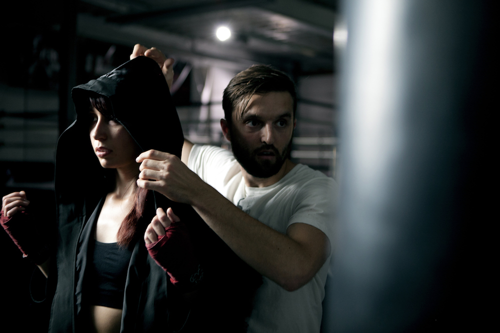
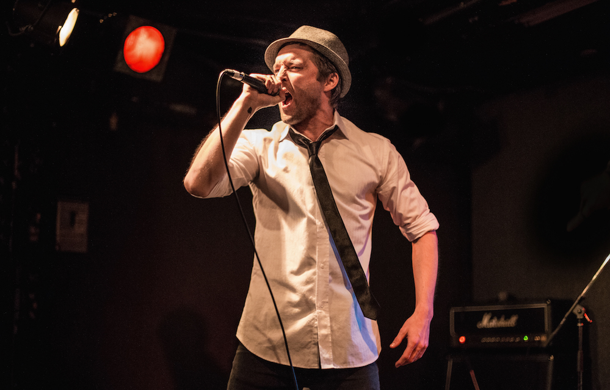

Founding member of both Tiny Danza and Dufferin '83, Andrew Cameron makes his solo debut with the self-directed video "Want It All", and EP, "Coyote Off A Cliff." Some past collaborations include Jimmy Harry (Pink, Ke$ha, Madonna), two time Juno nominee Fresh Kils and Juno nominated Rich Kidd. "Coyote Off A Cliff" features production from Austrailia's MPHAZE and Cam Bluff, Toronto's own Rich Kidd, Marlon James and Think Twice. “Dark Matters” Cameron’s second project, is expected fall 2016.
Somewhere along the way, Andrew Cameron lost his mind. He got his start as an actor, aquiring a Dora nomination for theatre performance, a role as a villain on Toronto’s SWAT show Flashpoint and even a cameo on the legendary Degrassi: The Next Generation. All progress came to a halt in 2012 when Cameron was accepted to an emergency ward for psychosis and addiction. Penning one of his strongest songs in a psyc ward for his five piece band Tiny Danza, Cameron would remain inside for six weeks before moving on to release the solo tape “All That Is” and album “Coyote Off A Cliff.” Drawing on his acting experience, Cameron would direct three music videos including the stunning “Want It All”, showcasing Toronto’s landmarks on Red Dragon camera and Phantom drone. Cameron wrote, cast, produced and directed the video about overcoming his demons. Tiny Danza continues to make huge strides. Recording in the Hills with pop guru Jimmy Harry (Pink, Ke$ha Madonna), winning Toronto’s Indie week and having their single “Beat Fly” playable on Xbox’s Rock Band. Continuing to work in acting, directing and music, Cameron is steadily building towards becoming one of Canada’s strongest multidisciplinary artists. Some collaborations include two time Juno nominated Fresh Kils, Australia’s top producer M-PHAZES, and Juno nominated Rich Kidd.